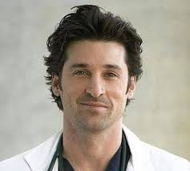
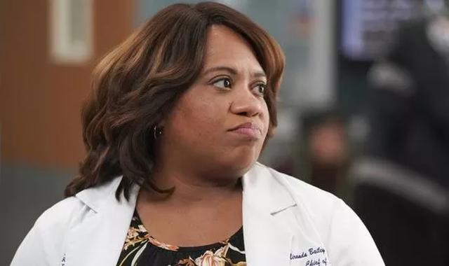

-

Derek Shepherd
-
Miranda Bailey

Derek Christopher Shepherd nació en una familia de clase media de Nueva York y tiene cuatro hermanas: Nancy, Amelia, Liz y Kate. Su padre fue asesinado cuando él era un adolescente, algo que marcó su personalidad. Se licenció en medicina como sus hermanas Nancy, que es especialista en obstetricia y ginecología, Kate, que psiquiatra, y Amelia, también neurocirujana. Por otro lado, su mejor amigo desde la niñez es el cirujano plástico Mark Sloan, un chico falto de cariño familiar a pesar de proceder de una familia adinerada, así que se sintió como un hijo más en la familia Sheperd. Se casó en 1994 con su novia de la Facultad de Medicina, Addison Montgomery, y los dos empezaron sus años como internos, estudiando bajo la tutela del doctor Richard Webber. Después de la interinidad, el matrimonio logró el éxito rápidamente en sus respectivos campos. Llevaban un estilo de vida próspero y esto se veía reflejado tanto en su casa de Manhattan, que daba a Central Park, como en su residencia en la exclusiva localidad de Los Hamptons. Además, también poseían sus propias consultas privadas. Sin embargo, sus vidas laborales los mantenían tan ocupados que el matrimonio se comenzó a deteriorar progresivamente y la distancia emocional terminó causando una infidelidad: Addison inició una aventura con Mark Sloan, el mejor amigo de su marido. Después de descubrirlos en su propia cama, Derek dio por terminado su matrimonio y aceptó la oferta de empleo de Webber en el hospital Seattle Grace como cabeza del Departamento de neurocirugía. Cambió su hermosa casa de Manhattan por una sencilla caravana ubicada en una propiedad que compra al llegar a la ciudad: cuarenta acres en la Isla Bainbridge. La noche antes de que comience el nuevo ingreso de internos de cirugía en el hospital, Derek conoce a Meredith Grey en el "Bar de Joe" y acaban acostándose juntos. A la mañana siguiente ambos descubren que él es el jefe de neurocirugía y ella una nueva interna.
Miranda Bailey, graduada del Wellesley College, es una cirujana residente anteriormente a cargo de cinco internos. Sus colegas se refieren a ella como "La Nazi" a causa de su difícil personalidad y actitud tajante. Aunque a menudo es dura con los internos, ha demostrado proporcionar apoyo y asesoramiento cuando lo necesitan. Se casó con Tucker Jones en 1995. Su hijo, William George Bailey Jones, nació el mismo día que una bomba explotaba en el Seattle Grace, mientras su marido estaba en cirugía con el doctor Derek Shepherd, y después de haber chocado su automóvil en el camino hacia el hospital en el capítulo Es el fin del mundo tal como lo conocemos, recopilación de dos episodios. George O'Malley la ayudó en el parto de su hijo, y por ello le da el nombre de William George Bailey Jones (apodado "Tuck" para su padre). Al final de la segunda temporada e inicio de la tercera, Bailey consideró el convertirse en madre y continuar su carrera como cirujana . Su condición de personal de confianza fue puesto en duda cuando Izzie Stevens cortó el cable LVAD de Denny Duquette y éste posteriormente falleció tras su trasplante de corazón; Bailey consideró que ella no tenía control de sus internos, y que el incidente por ello era culpa suya. Fue criticada por los acontecimientos en el capítulo "Oh, la culpa", cuando un colega le cuestiona directamente sobre su carrera y la maternidad. Desilusionada por lo poco que puede ayudar a los pacientes como una cirujana, Bailey decidió abrir una clínica gratuita en el Seattle Grace Hospital en la temporada 3. Enfrentó dificultades para obtener el apoyo de los cirujanos, pero después de hablar con el Jefe, logró obtener su acuerdo para trabajar y abrir la clínica allí. La "Clínica en memoria de Denny Duquette" fue abierta con la herencia que Izzie recibió de Denny Duquette. Bailey compitió para el cargo de Jefa de Residentes, pero en el último episodio de la tercera temporada, la doctora Callie Torres obtiene el puesto por una petición del Dr. Richard Webber; sin embargo, éste le indicó que podría convertirse en Jefa de Cirugía en unos pocos años.